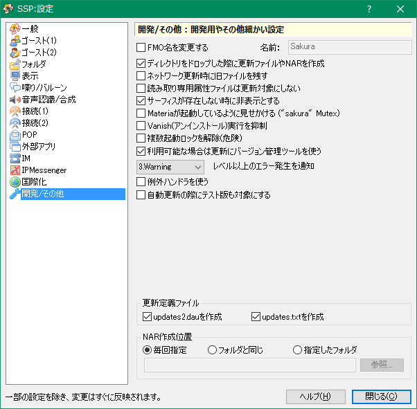

設定：開発/その他
画像左側のリストをクリックすると、それぞれの解説ページへ移動します。

このページでは右クリックメニューの「設定」サブメニューにある項目「本体設定」で開くダイアログの、「開発/その他」ページについて解説しています。
この設定は「一般」の設定で、「開発者用機能を有効にする」をONにしないと表示されません。
開発者用、その他特殊な場合に設定する必要がありますが、その他の場合はすべて標準設定で問題ありません。
特に必要のある場合以外は設定を変えないでください。
各項目の解説
- FMO名を変更する
- 現在起動中のゴーストをリストアップするFMOの名前を変更します。
通常は標準のSakuraのままで問題ありません。 - ディレクトリをドロップした際に更新ファイルやNARを作成
- ゴーストにディレクトリをドラッグ＆ドロップした際の動作を決定します。
開発時はONにしておくと、ゴーストに通知するか開発系のコマンドを実行するかの動作を選択できるようになります。 - ネットワーク更新時に旧ファイルを残す
- ネットワーク更新で一時的に作成したファイルを、削除しないで保存しておきます。
ネットワーク更新の際に起こった問題などを追跡するために使用することが出来ます。 - 読み取り専用属性ファイルは更新対象にしない
- ネットワーク更新の対象になっているファイルに読み取り専用属性がついている場合、更新せずにそのまま残しておきます。
- サーフィスが存在しない時に非表示とする
- スクリプトで指定されたサーフィスが存在しない時に、ゴーストのウィンドウを消去します（通常はデフォルトサーフィスが表示）。
ゴーストのスクリプトの不具合の検証用途などに利用できます。 - Materiaが起動しているように見せかける
- Mutex "sakura" を作成し、Materiaが起動しているかのようにふるまいます。
Materiaでしか動作しない設計となっているソフトが動作する可能性があります。 - Vanish（アンインストール）実行を抑制
- 絶対にVanish（アンインストール）を実行できない状態にします。
ゴースト開発中等に誤ってVanishを実行してしまうのを防ぐ等に利用できます。 - 複数起動ロックを解除
- 通常SSPは1マシンに1つしか起動できないようになっていますが、開発用とその他用に分けたい場合など、複数起動したい場合にこのロックを解除してください。
ただし、SSP自体は複数起動を前提とした設計になっていませんので、多少不具合が起こる可能性があります。
また、NARファイルを関連付けしている場合、NARを開いてのインストール実行ができなくなります（ドラッグ＆ドロップは利用可能）。 - 利用可能な場合は更新にバージョン管理ツールを使う
- ゴーストの管理にバージョン管理ツールが使われている場合は、通常のネットワーク更新の代わりに、それを起動して「更新」処理を行います。
- [XXX]レベル以上のエラー発生を通知
-
選択したレベル以上のエラーが発生した際に、タスクトレイアイコンからバルーンを表示します。
ゴースト開発者は、開発中NOTICEか少なくともWARNING以上を通知することが推奨されます。
通知レベルの意味については「スクリプトログ」のページを参照してください。 - 例外ハンドラを使う
-
デバッグに協力していただける方や、ゴースト開発者はOFFにしておくと、メモリへのアクセス違反等で「ちゃんと落ちる」ようになります。
あまり頻繁にSSPが落ちるような場合はONにするといくらか軽減するかもしれませんが、開発中は非推奨です。
更新定義ファイル
updates2.dauとupdates.txtのどちらを出力するか設定します。
NARダウンロードフォルダ
ゴースト上にURLをドラッグ＆ドロップした際に動作する、自動ゴーストダウンロード機能のファイルの保存先です。
特に理由がない限り、標準のままが良いでしょう。
NAR作成位置
NAR作成機能でNARファイルを出力するパスを設定します。
- 毎回指定
- 毎回作成先とそのファイル名を指定します。
- フォルダと同じ
- NARを作成するゴーストのフォルダと同じ場所に作成するようにします。
- 指定したフォルダ
- 常に指定したフォルダの中に作成するようにします。
下部のボタン
- ヘルプ
-
本体設定ダイアログの、設定中のページのヘルプ（つまりこのページ）を開きます。
ダイアログ右上の「？」マークも同様です。 - 閉じる
-
本体設定ダイアログを閉じます。
ダイアログ右上の「×」マークも同様です。